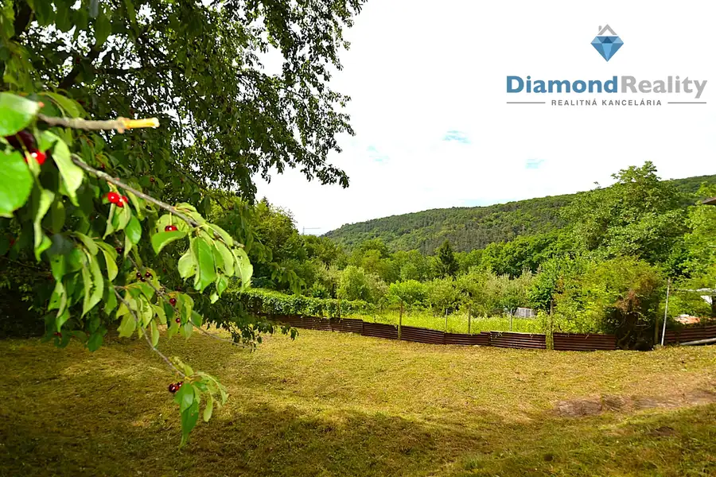
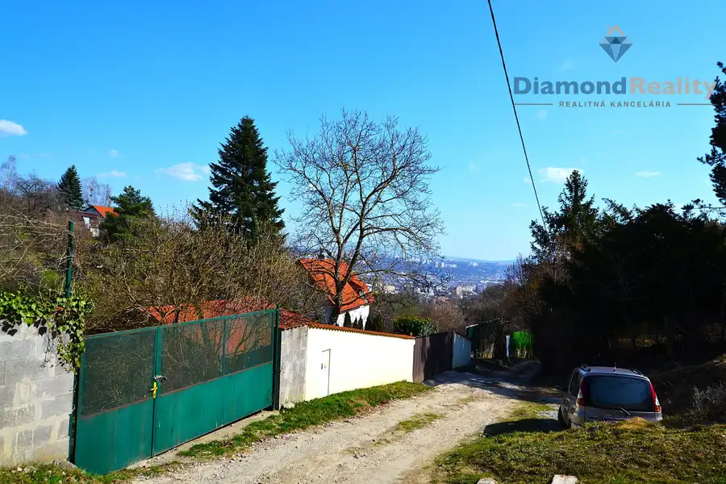

Krásny 1-izbový byt Hlavná ulica Košice
Staré Mesto, Košice
- Dispozícia1-izbový
- Plocha32 m²
- StavKompletná rekonštrukcia
- VlastníctvoOsobné
O nehnuteľnosti
Hľadáte štýlové mestské bývanie v absolútnom centre diania, alebo bezpečnú investičnú príležitosť? 🏙️ Tento byt spĺňa obe podmienky na 100 %. 🌟Mgr. Patrik Janok, RSc., realitný maklér pre Košice a okolie 🤝 vám exkluzívne ponúka na predaj kompletne zrekonštruovaný, dizajnový 1-izbový byt na Hlavnej ulici v Košiciach. 📍Video si pozriete ak vložíte tento link do svojho prehliadača: https://lnk.sk/kwe29Hlavné prednosti bytu:🎨 Kompletná rekonštrukcia: Byt sa predáva kompletne a štýlovo zariadený. Tak ako bolo v minulosti v týchto bytoch zvykom, nudné biele steny oživili maľbami. V tomto byte s použitím akrylu. Byt nevyžaduje žiadne ďalšie investície – stačí sa nasťahovať alebo okamžite začať prenajímať. ✨🏛️ Historický šarm & moderný komfort: Vysoké stropy a elegantné klenby dodávajú priestoru jedinečnú atmosféru, zatiaľ čo klimatizácia ❄️ zabezpečí dokonalé pohodlie v každom ročnom období.🪟 Dispozícia a orientácia: Byt sa nachádza na 1. poschodí s oknami orientovanými do dvora.🔥 Vlastné kúrenie: Máte plnú kontrolu nad spotrebou a tepelnou pohodou.Technické informácie a dispozícia:📐 Úžitková plocha: 32 m²📦 Príslušenstvo: K bytu prislúcha praktická komora umiestnená priamo pred bytovými dverami.💶 Mesačné náklady: Mimoriadne nízke – spolu iba 104 € (bez internetu).Vďaka TOP polohe v srdci Košíc priamo na Hlavnej ulici je tento byt magnetom pre mladých ľudí, expatov či turistov. 🧳 Prenejateľnosť bytu je mimoriadne vysoká, čo z neho robí ideálny produkt na dlhodobý alebo krátkodobý prenájom (napr. Airbnb) s rýchlou návratnosťou. 💰Cena: 199.999 EUR. 💸 V cene je právny servis a poplatky spojené s prevodom nehnuteľnosti na nového majiteľa. ⚖️Ak hľadáte nehnutellnosť, kde sa spája mestský štýl, nízke náklady a prémiová investičná lokalita, neváhajte ma kontaktovať. Rád vám byt predstavím osobne. 👋📞 m. 0905513697 📧 janok@diamondreality.sk
Parametre
| Cena vrátane energií | Nie |
|---|---|
| Druh | 1 izbový byt |
| Dátum zverejnenia | 30. 6. 2026 |
| Stav nehnuteľnosti | Kompletná rekonštrukcia |
| Typ | Predaj |
| Vlastníctvo | Osobné |
| Vybavenie | Špajza |
| Úžitková plocha | 32 m² |
Kde to je


Mohlo by Vás zaujímať

PozemokNové10 84 999 €TOP Na predaj záhrada s murovanou chatou Košice-SEVER Sever, Košice 1274 m² 🌲 NA PREDAJ: Murovaná chata s veľkorysým pozemkom a luxusným výhľadom – Košice-ČermeľPonúkame na predaj útulnú, murovanú chatu, ktorá sa nachádza v…
PozemokNové10 129 999 €TOP Na predaj veľká záhrada Košice-Sever, 2x voda, elektrina Sever, Košice 1590 m² Pozemok na predaj v lokalite Košíce-SEVER Realitný maklér Patrik Janok ponúka na predaj pozemok priamo v Košiciach na ulici Žľaby. v lokalite Červený…